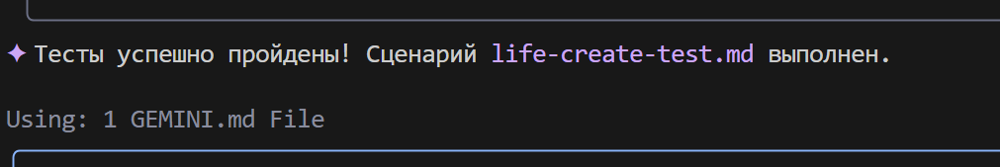

GEMINI.MDIn the working directory, create a GEMINI.md file and insert the system instruction into it. Example instruction:
## 📘 Instruction for Python Code Generation
### 1. General Rules
* Use **Python 3.10+**.
* Adhere to a **clear, readable, and unambiguous coding style**.
* **Every function, method, and class** must have:
* Type annotations (`type hints`)
* Full and correct documentation in `docstring` format (see section 3)
* Internal comments (`#`), where necessary
---
### 2. Comments
* Comments must be **accurate** and describe **what the code does**, not "what we do".
* **Forbidden** to use pronouns: `we do`, `we return`, `we send`, `we go`, etc.
* **Allowed** only terms: `extraction`, `execution`, `call`, `replacement`, `check`, `sending`, `Function performs`, `Function changes value`, etc.
#### ❌ Example of incorrect comment:
```python
# Get parameter value
```
#### ✅ Example of correct comment:
```python
# Function extracts parameter value
```
---
### 3. Docstring (documentation format)
Every function/method/class must contain a `docstring` in the following format:
```python
def function(param: str, param1: Optional[str | dict | str] = None) -> dict | None:
"""
Args:
param (str): Description of parameter `param`.
param1 (Optional[str | dict | str], optional): Description of parameter `param1`. Defaults to `None`.
Returns:
dict | None: Description of the return value. Returns a dictionary or `None`.
Raises:
SomeError: Description of the situation in which the `SomeError` exception occurs.
Example:
>>> function('param', 'param1')
{'param': 'param1'}
"""
```
* **All parameters and return values must be described.**
* Formulations must be **concise, accurate, and unambiguous**.
* Skipping the description of parameters/return values/exceptions is not allowed.
---
### 4. Type annotation
* **All variables, parameters, and return values** must be annotated.
* Use Python 3.10+ syntax: `list[int]`, `dict[str, Any]`, `str | None`, etc.
* Examples of correct annotations:
#### ✅ Simple types:
```python
name: str = "John"
count: int = 42
flag: bool = True
```
#### ✅ Collections and complex types:
```python
from typing import Any, Optional, Callable, TypeAlias
coordinates: tuple[float, float] = (55.75, 37.61)
metadata: dict[str, Any] = {"debug": True}
UserId: TypeAlias = int
```
#### ✅ Functions and methods:
```python
def get_user_name(user_id: int) -> str:
"""Returns the user's name by their ID."""
...
```
#### ✅ Asynchronous functions:
```python
async def fetch_users() -> AsyncIterator[dict[str, int | str]]:
...
```
#### ✅ Generic types:
```python
from typing import TypeVar, Generic
T = TypeVar("T")
class Container(Generic[T]):
def __init__(self, value: T) -> None:
self.value = value
def get(self) -> T:
return self.value
```
---
### 5. Other
* Use `default_factory` in `dataclass` for mutable values (`list`, `dict`).
* For `Optional` values, specify `T | None` (Python 3.10+) or `Optional[T]`.
* For complex structures, use `TypeAlias`.
---
📌 **Hint**: When generating code, always include type annotations, `docstring`, and avoid subjective phrasing in comments. The goal is the most accurate, reproducible, and formalized code structure.
This file will be used to configure Gemini CLI.
For convenience, let's create a game directory, which will store the project files, and a scenarios directory, which will store scenarios for Gemini CLI.
The file scenarios/life-create-code.md will contain instructions for creating the "Game of Life" code,
the file scenarios/life-create-test.md will contain instructions for creating tests,
and the file scenarios/life-create-doc.md will contain instructions for creating documentation.
life-create-code.md:
Inside the `game` directory, create a file `life.py`.
Inside, write the implementation of Conway's "Game of Life" in Python, using an object-oriented approach.
Use libraries: `numpy`, `pygame` (for graphics).
Requirements:
1. Create a `Game` class.
2. In `__init__`, the class should accept grid dimensions (width, height) and create a random initial field.
3. Create a `step()` method that updates the game state by one step according to the rules:
- A living cell with < 2 living neighbors dies (loneliness).
- A living cell with 2 or 3 living neighbors survives.
- A living cell with > 3 living neighbors dies (overpopulation).
- A dead cell with exactly 3 living neighbors becomes alive (birth).
4. Create a `display()` method or override `__str__` to print the field to the console. Use characters, e.g., '■ ' for a living cell and ' ' for a dead one.
5. Use the `numpy` library for efficient grid operations.
6. In the `if __name__ == '__main__':` block, add an example that creates a game and runs the simulation in a loop with a small delay between steps.
7. For game visualization, use pygame or another graphics library, if possible.
life-create-test.md:
Inside the `game` directory, using the context from the file @life.py, create a file with tests test_life.py. Use the pytest framework.
The test should check the correct evolution of a simple "Blinker" oscillator (three cells in a row).
Test scenario:
1. Import the `Game` class from `life`.
2. Create a test function, e.g., `test_blinker_oscillation`.
3. Inside the test, create a `Game` instance with a fixed size (e.g., 5x5).
4. Manually set the initial state of the field so that in the center there is a horizontal line of three living cells (Blinker).
5. Call the `game.step()` method.
6. Using `assert` and `numpy.array_equal`, check that the field has changed to a vertical line of three cells.
7. Call the `game.step()` method again.
8. Check that the field has returned to its original horizontal state.
life-create-doc.md:
Analyze the files @life.py and @test_life.py inside the `game` directory and create a documentation file doc.md based on them.
The documentation structure should be as follows:
- **Title:** # Project "Game of Life"
- **Brief description:** Explanation of what this project is (implementation of Conway's cellular automaton).
- **File structure:** Brief description of the purpose of `life.py` and `test_life.py` files.
- **How to run the simulation:** Section with the command to run the main file (`python life.py`).
- **How to run tests:** Section with the command to run tests (`pip install pytest numpy`, then `pytest`).
The directory structure will look like this:
Launch gemini-cli in the terminal:

Important! Make sure you are in the directory where the GEMINI.md file is located.


Give permission to create the file:

After that, gemini-cli will generate the life.py file in the game directory:

Continue:
Create a venv virtual environment, install the necessary dependencies, and run the game code.

Give the necessary permissions to run scripts

pip

and finally gemini-cli starts the game:
.
Step 3: Creating tests


Error

gemini-cli tries to solve the problem


Last step — creating documentation

Voila! Documentation created: